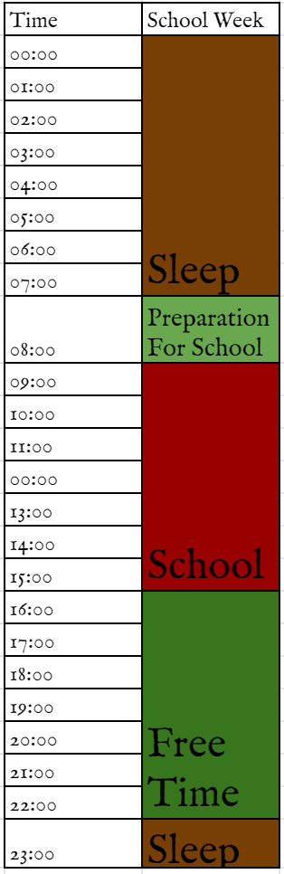

One key aspect to studying consistently and for a set period of time is scheduling. Scheduling should not be considered a chain which you bind yourself to but instead a tool which helps you live the life you want to leave. When divisng a schedule, you should ensure to make it as realistically achieveable as possible. You do not need to schedule every minute of your life - a schedule is a tool to help you, not hurt you.

The scheduled picture here shows what time (Free Time) is available for you to plan to your liking. This means you have roughly 6 hours to study. Of course there are other responsibilities you have but this is the time you have to work with. When viewed like this, it becomes relatively easy to plan out your time. Remember though - Make a schedule you know you can follow, making a strict schedule and not following it doesn't help. Rome, just like your study habits, wasn't buit in a day.